Project 2: Fun with Filters and Frequencies
In this project, I explored the fundamentals of image processing by implementing convolutions, applying various filters for edge detection, and manipulating image frequencies to create hybrid images and seamless blends. The goal was to build an intuition for how filters and frequency analysis can be used to extract features and create interesting visual effects.
Part 1: Fun with Filters
1.1: Convolutions from Scratch!
I implemented a 2D convolution function from scratch using NumPy. The process involves sliding a kernel over the image and computing the dot product at each location. I implemented padding to ensure the output image maintained the same dimensions as the input.
Convolution performed using scipy.signal.convolve2d: 0.1s
convolution2: 2.8s
convolution4: 21.2s
As we can see, the built in convolve2d is significantly faster. The difference in time for the 4 loop is also significantly longer than the 2 loop implementation by 20 seconds.
For boundary handling, my custom functions use zero padding on the borders. convolve2d has a boundary parameter where you can choose "fill", "sym", or "wrap". Based on visually inspecting my images in my notebook, I did not notice a difference in the boundaries of the outputs.
My Convolution Code: 4 loops and 2 loops
def convolution4(image, filter):
# add padding 0s on every side of the image by appending arrays
# 4 for loops
img_height, img_width = image.shape
filter_height, filter_width = filter.shape
pad_height = filter_height // 2
pad_width = filter_width // 2
padded_image = np.zeros((img_height + 2 * pad_height, img_width + 2 * pad_width))
padded_image[pad_height:pad_height + img_height, pad_width:pad_width + img_width] = image
out = np.zeros_like(image)
# naive imp goes thru every pixel in out, elem wise sum & *multiply
for y in range(img_height):
for x in range(img_width):
current_sum = 0
for ky in range(filter_height):
for kx in range(filter_width):
# map to ppadded image
img_y = y + ky
img_x = x + kx
current_sum += padded_image[img_y, img_x] * filter[ky, kx]
out[y, x] = current_sum
return out
################################################################################################
def convolution2(image, filter):
out = np.zeros_like(image)
img_height, img_width = image.shape
filter_h, filter_w = filter.shape
image_padded = np.zeros((image.shape[0] + 2, image.shape[1] + 2))
image_padded[1:-1, 1:-1] = image
pad_h = filter_h // 2
pad_w = filter_w // 2
image_padded = np.zeros((img_height + 2 * pad_h, img_width + 2 * pad_w))
image_padded[pad_h:-pad_h, pad_w:-pad_w] = image
out = np.zeros_like(image)
# flip fiter/kenrel
flipped_filter = np.flipud(np.fliplr(filter))
for y in range(img_height):
for x in range(img_width):
patch = image_padded[y : y + filter_h, x : x + filter_w]
out[y, x] = (flipped_filter * patch).sum()
return out
Results
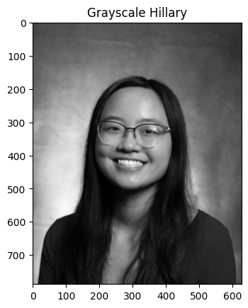
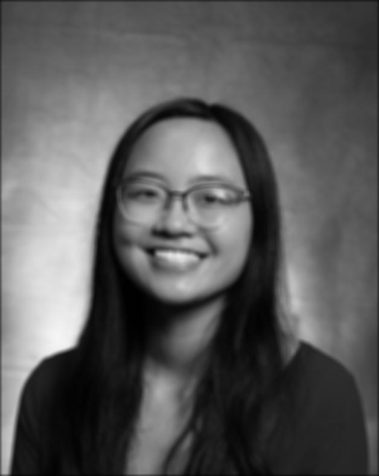
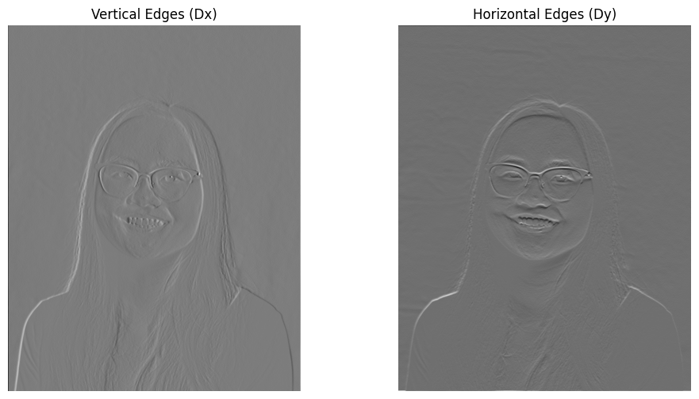
1.2: Finite Difference Operator
Using the finite difference operators Dx = [1, 0, -1] and Dy = [1 0 -1], I computed the partial derivatives of the cameraman image. The gradient magnitude was then calculated. To create a clean edge image, I binarized the gradient magnitude by selecting a threshold to suppress noise while preserving the main structural edges.

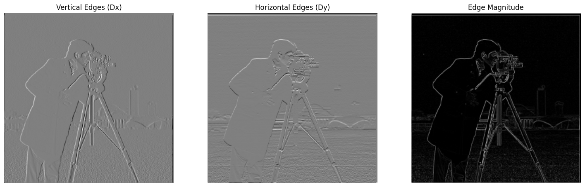
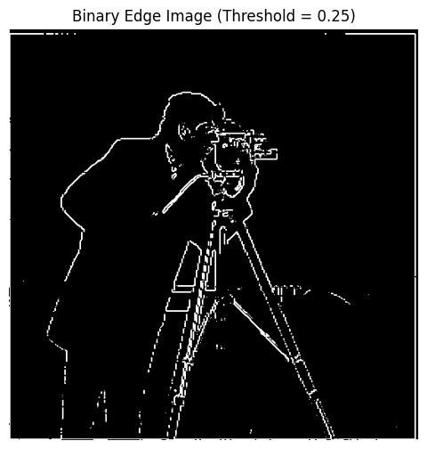
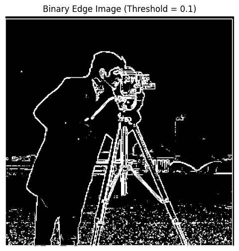
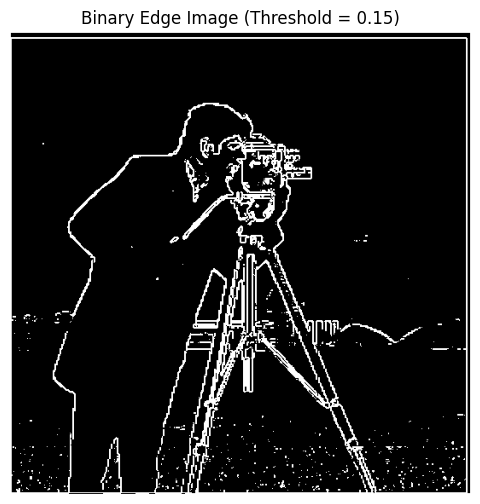
1.3: Derivative of Gaussian (DoG) Filter
To reduce noise, I first smoothed the image with a Gaussian filter and then applied the finite difference operators. A more efficient approach is to convolve the Gaussian filter with the difference operators first, creating Derivative of Gaussian (DoG) filters.
The magnitude of the gradient can be calculated by taking the square root of the sum of the squares of the partial derivatives:
Here, we first blur the image with a 2D Gaussian filter and then apply the derivative operators to the blurred result. This is the (I * G) * Dx approach where I represents the input Image. G represents the Gaussian filter used for smoothing/blurring which the image is convolved with. Dx represents the Derivative filter for finding edges along the x-axis.
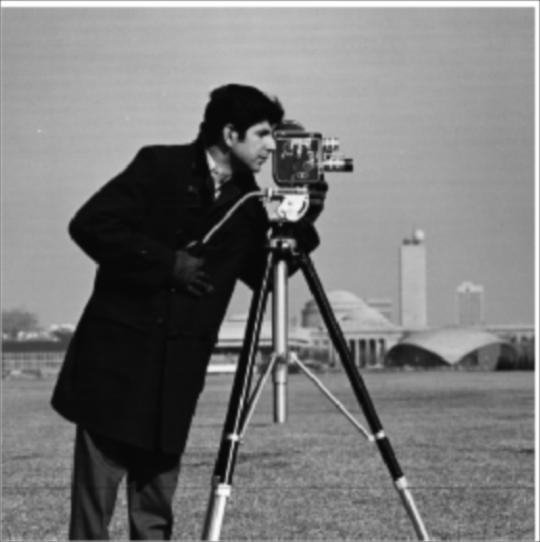
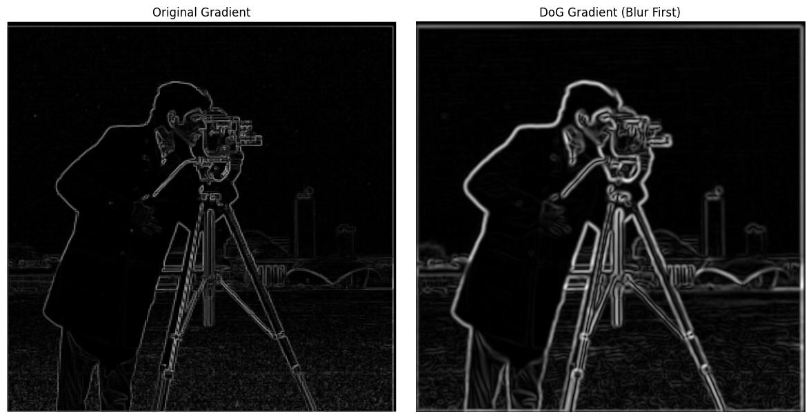
We can observe that the edges with the 2D DoG filter are much more defined. The outline is darker.
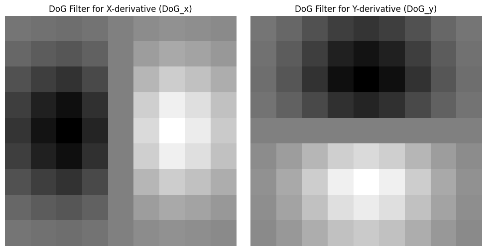
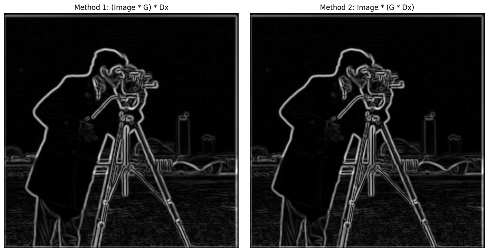
Part 2: Fun with Frequencies!
2.1: Image "Sharpening"
Image sharpening can be achieved using an unsharp mask filter. This technique works by creating a blurred (low-frequency) version of the image and subtracting it from the original to get the high-frequency details, which are then added back to the original image.
Sharpened Image=Original Image+α(Original Image−Low-pass Filtered Image)
First, the code loads an image and separates it into its individual red, green, and blue color channels. For each channel, it creates a blurry version by applying a Gaussian blur. It then isolates the image's "details" (the sharp edges and textures) by subtracting the blurry version from the original channel. The key step is to then amplify these extracted details by multiplying them by a sharpening factor, alpha, and add them back to the original channel. After performing this process on all three color channels independently, the code stitches the sharpened channels back together to create the final, crisper color image.
Taj Mahal Example with varying sharpening amounts (alphas)


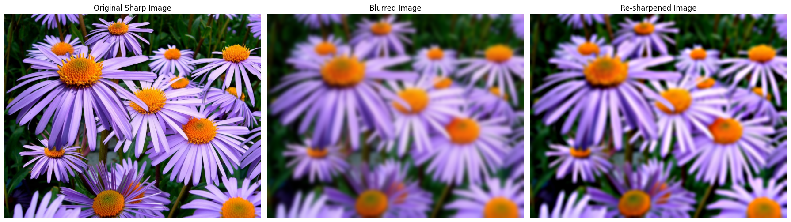
Side note: This was a fun exercise as I got to try many pictures. Unfortunately, the sharpening effect didn't work on some images, so I didn't display them here. I spent quite a while trying to sharpen an image of a penguin on a rock and it didn't work.
2.2: Hybrid Images
Hybrid images combine the low frequencies of one image with the high frequencies of another, creating an image that is interpreted differently depending on the viewing distance.
Favorite Hybrid Example & Frequency Analysis
I used a low pass filter for Derek and a high pass filter for Nutmeg the cat. I experimented and found a sigma of 3 or 4 for the cat alongside a sigma of 10 for Derek gave good results. I found that grayscale images produced better results, as significant differences in color and brightness between the source images can make the final hybrid look strange. I converted the images to grayscale before processing and filtering.
Selecting good points is also very important for the alignment. For the hummingbirds, I tried multiple alignments such as eye to beak, wing to wing, and wing to feet. The one that worked best was aligning the wing to feet.
For the first image (im1), we keep only its sharp details and textures. To do this, create a blurry copy using a Gaussian blur and subtract this blurry copy from the original image. What's left over (high_pass_im) is just the sharp lines and edges which is the "high-frequency" information.
For the second image (im2), we apply a Gaussian blur to get rid of all the fine details, leaving only the blurry, low-resolution shapes and colors which is the "low-frequency" information.
The final hybrid image is created by simply adding the "details" from the first image to the "blurry base" of the second. When you look at the result up close, your eyes pick up on the sharp details.


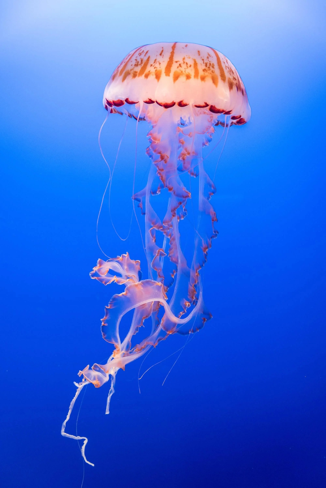
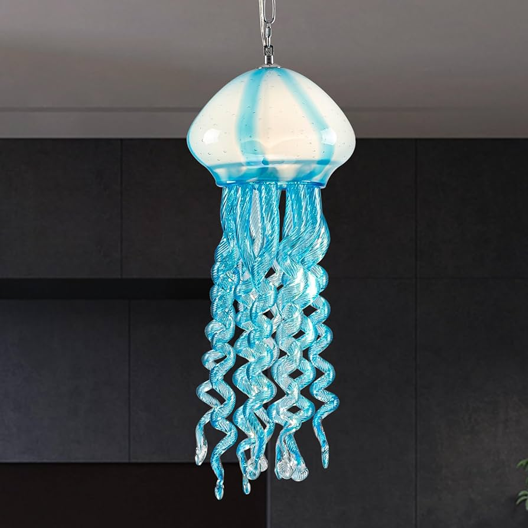
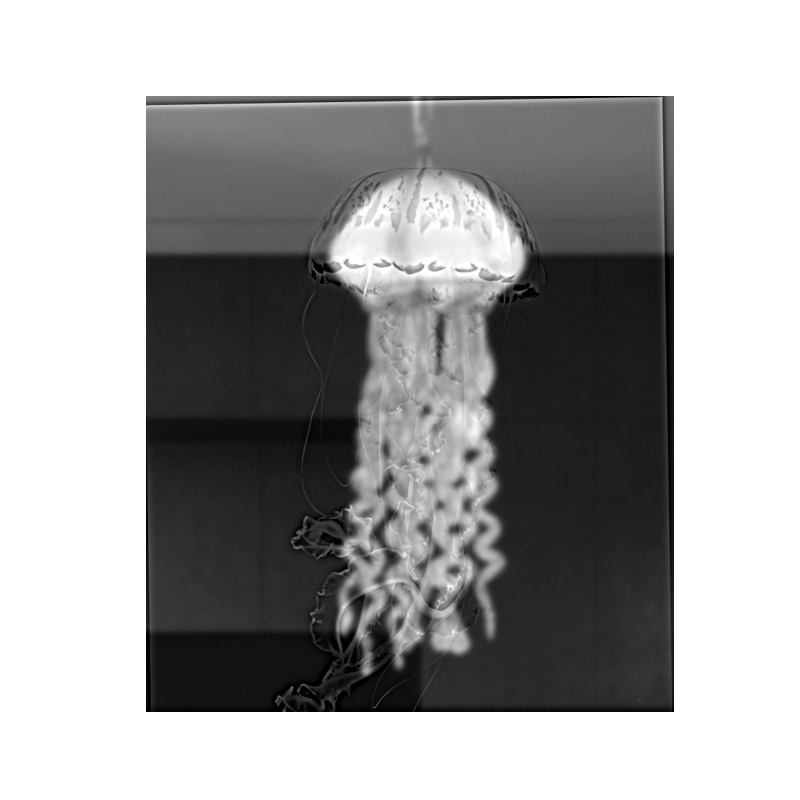
For the jellychandelier, I used sigma1=5, sigma2=4 and I put im1 as the jellyfish and im2 as the chandelier.
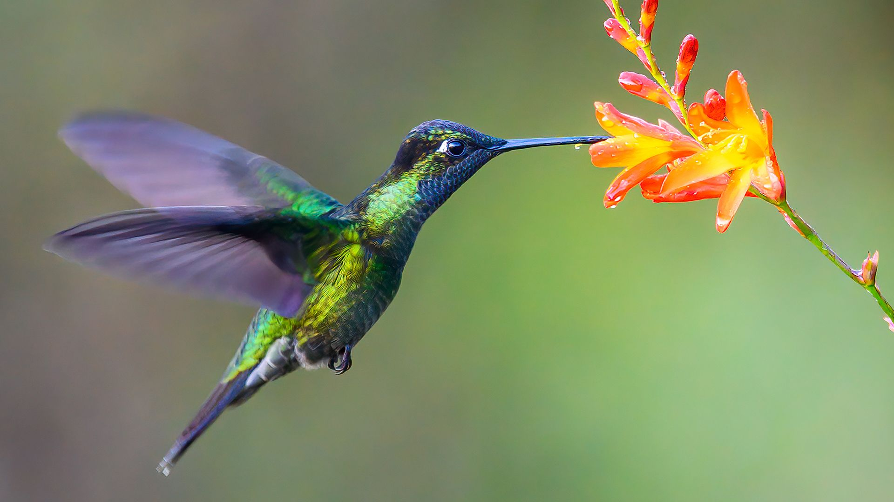
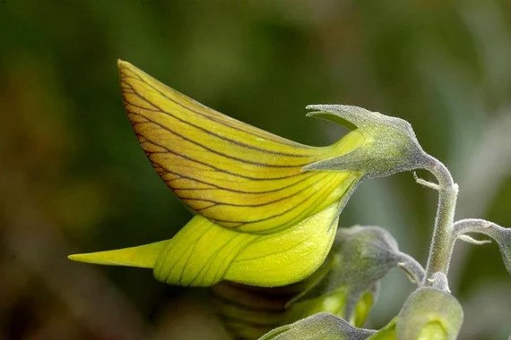
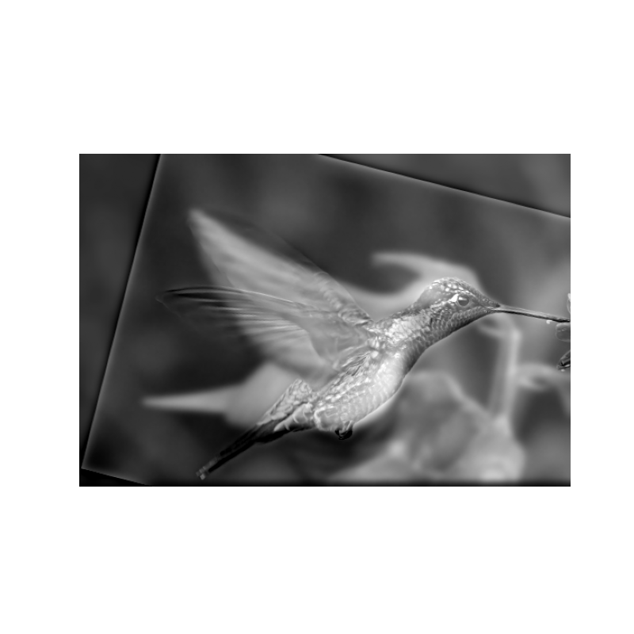
For the hummingbirds, I used sigma1=5, sigma2=4 with im1 being the hummingbird and im2 being the hummingbird shaped flower.
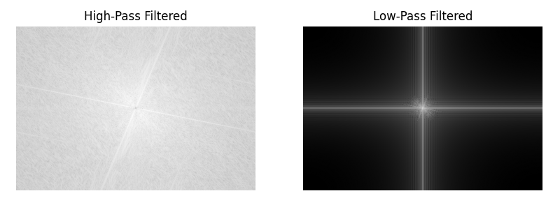
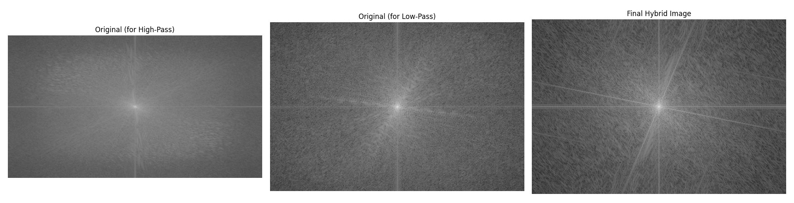
2.3 & 2.4: Gaussian/Laplacian Stacks & Multiresolution Blending
Multiresolution blending stitches two images by decomposing them into frequency bands using a Laplacian stack, combining them at each level with a soft mask, and then reconstructing the final image.
Here, we merge two images using a mask. Instead of working with the images directly, this method decomposes them into different frequency bands, allowing for a much smoother and more natural transition. The fundamental concept relies on two types of image pyramids. First, a Gaussian pyramid is constructed for an image by repeatedly blurring and downsampling it. This creates a multi-level stack of images, each representing a lower-frequency (blurrier) version of the one before it. From this, a Laplacian pyramid is created, which stores the high-frequency details (like edges and textures) by calculating the difference between adjacent levels of the Gaussian pyramid. In essence, this separates the broad colors and shapes of an image from its fine details. The main blend_images function orchestrates the entire process. After preparing the input images to ensure they are the same size and format, it builds a Laplacian pyramid for each of the two source images.It also builds a Gaussian pyramid for the blending mask. Using a blurred, multi-scale mask is the key to the seamless effect, as it ensures the transition is gradual at every frequency level. The code then creates a new, blended Laplacian pyramid by combining the levels from the two source pyramids according to the corresponding blurred mask level. Finally, the collapse_pyramid function reconstructs the final image from this newly created blended pyramid. It works in reverse, starting with the smallest, blurriest image at the pyramid's base and iteratively upsampling it while adding back the combined detail information from each level. This process continues until the full-resolution, seamlessly blended image is formed.
"Oraple" Blending Process


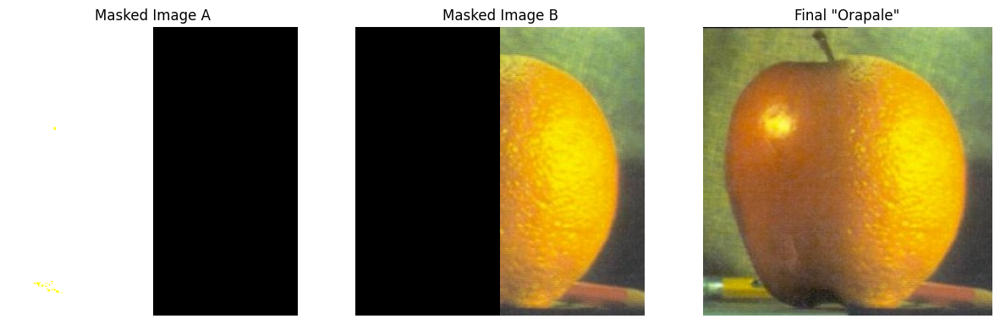
Laplacian & Gaussian Stacks for "Oraple"
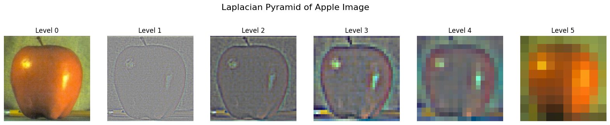
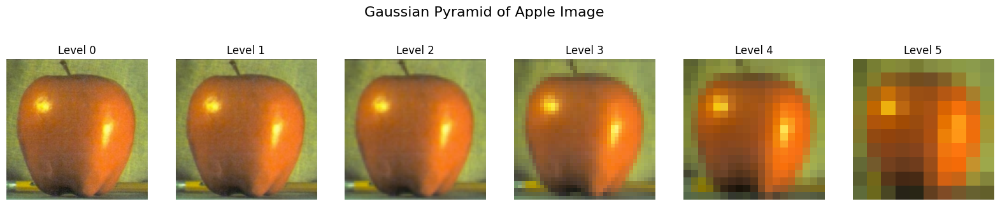
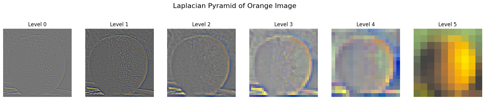
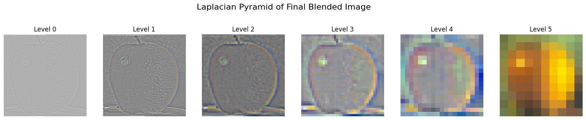
Custom Blended Images
Custom Blend 1: Camrolla
For my first custom image, I decided to combine two of my favorite cars: a 2020 Corolla and a 2001 Camry. However, it was difficult to find images of the 2001 Camry in the color, angle, and background that I wanted. Additionally, when aligning the cars, the result looked funky since the shape of the 2001 Camry model is longer and shorter than the more modern 2020 Corolla. To have a better blended effect, I then changed to using images of the latest models of the Corolla and Camry. I used a line to blend, and my output is a Camrolla!
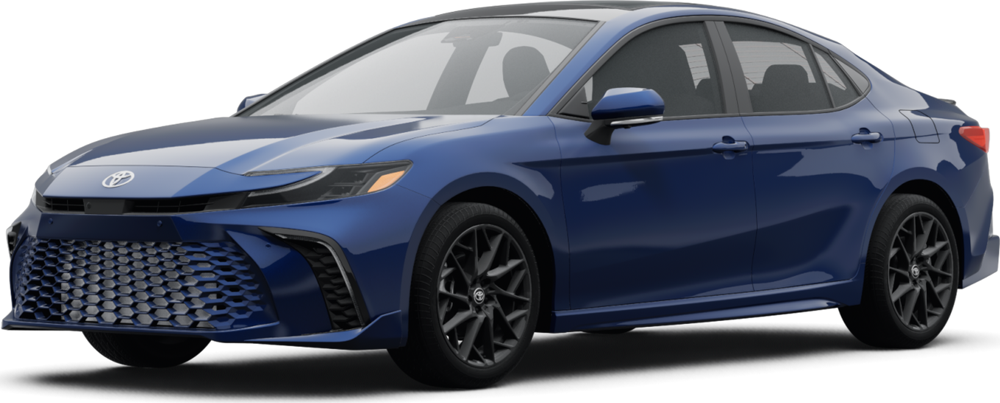
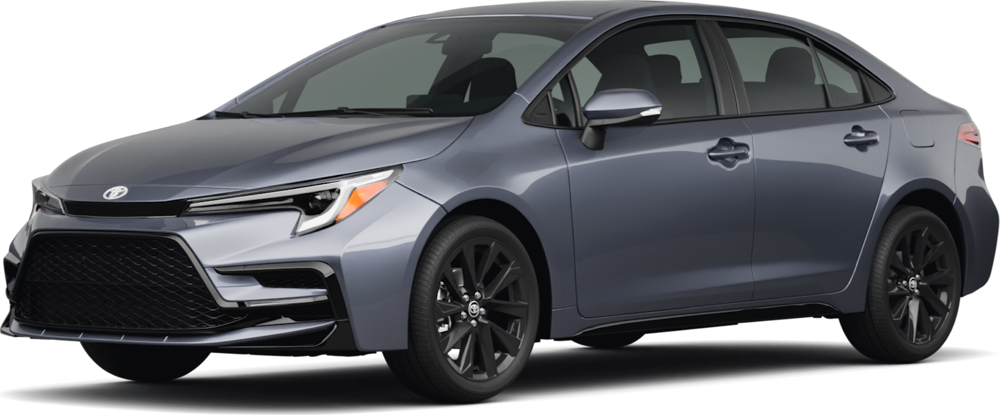
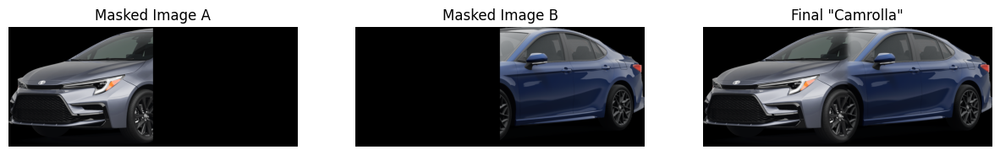
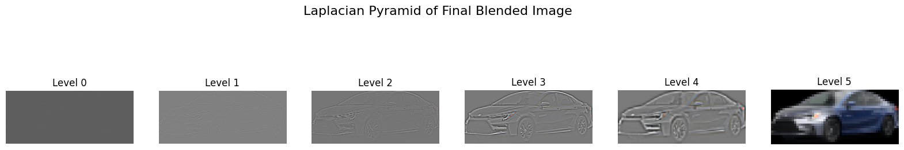
Custom Blend 2 with Irregular Mask: quenguino
For my second custom image, I chose to blend two of my favorite animals: a quokka and a penguin. Together, these make the Quenguino. I decided to use an ellipsis shape for my mask and switch out their heads. The images I found online were in different dimensions, so I used Canva to resize them to the same dimension. Then I created the mask by resizing the ellipsis on the quokka’s face. As you can see in my first try, this wasn’t a good choice because the quokka’s face is larger than the penguin’s, so the transparent background leaked through, leading to an ugly blend. I revisited my ellipsis design and instead made it the shape of the penguin’s head. This result is much cuter!
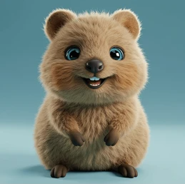
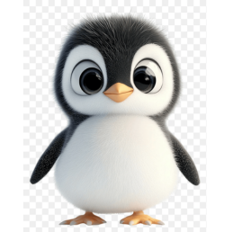
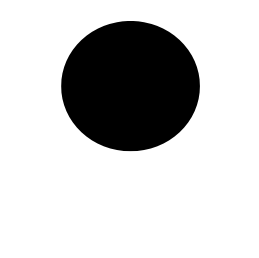
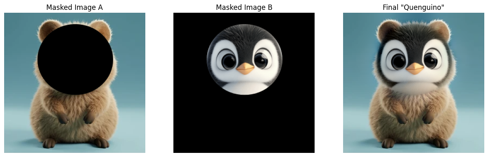
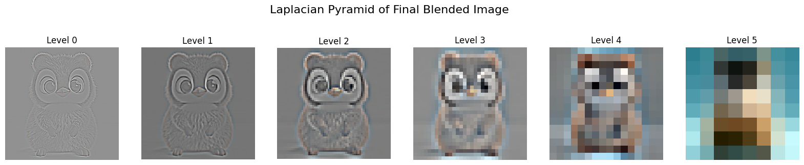
What I Learned
This was definitely a challenging project for me, but I learned a lot. My favorite parts of the project were the hybrid images and oraple. Before this project, I didn’t have a clear idea of the role frequencies play in how images appear. When I created algorithms to remove and isolate higher frequencies or lower frequencies and plotted the images, the effects became more clear to me than just describing it as a “blur” or “sharp”. The project also made me think creatively, and I’m very proud of the hummingbird hybrid alignment. The section on the oraple helped solidify my understanding of Laplacian and Gaussian pyramids and how they can work together. I also enjoyed getting to make my own filter and mixing two animals. Throughout the project one thing that I struggled with was ensuring dimensions and colors/format were correct when preprocessing the images. I had to debug many value errors but that gave me a better understanding of how the functions work together to pass and process the images and pixels.